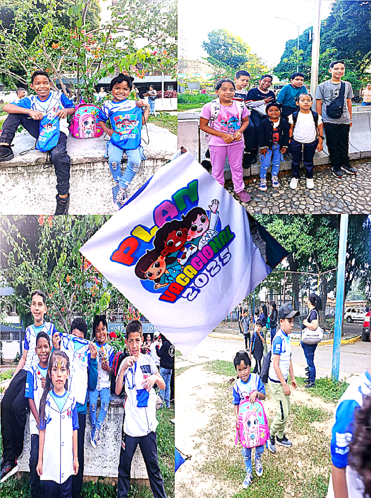

La atención médica gratuita y de calidad para todo el pueblo
Hugo Rafael Chavez Frias.
MISIÓN
Ser la Clínica Popular modelo a nivel nacional en atención de alta especialidad; que responda con sentido humanista a las necesidades de la comunidad en general, a través de la seguridad, innovación, excelencia y mejora continua a favor de las personas que requieran atención medica garantizada.
VISIÓN
Otorgar atención medica de calidad, con recursos especializados y tecnología de vanguardia; fomentando en su personal el humanismo, desarrollo, innovación y excelencia, para lograr la seguridad del paciente su bienestar y confianza.
ESTRUCTURA COMUNITARIA:
-CONSEJOS COMUNALES: 39
-CONSEJOS COMUNALES: 39
-CLAP: 51
-COMUNIDAD ATENDER: 51
-CÓMITE DE SALUD: 23
-CONSULT POPULARES: 08
- AMBULATORIOS: 03
-HOSPITALES: 03
-CDI 01
-SRI: 02
ANALISIS DE SITUACIÓN DE SALUD:
CONTROL PRENATAL: 42
CONTROL PRENATAL: 42
HIPERTENSOS: 1.123
DIABETICOS: 945
CONTROL NIÑO SANO: 745
PERSONAS CON DISCAPACIDAD: 168
CARDIOVASCULAR: 86
EPILEPTICOS: 98
BINESTAR SOCIAL
